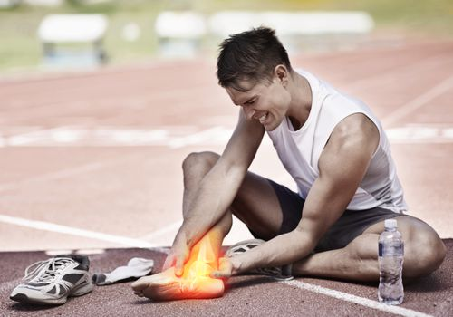

Napriek mnohým blahodarným účinkom, beh prináša aj určité druhy zranení. Tými sú bežné zranenia ako napríklad „bežecké koleno“ (bolesti kolien), skrátenie svalov (hlavne hamstringov), podráždené bradavky (najmä počas dlhších behov), vyvrtnuté členky či problémy s achilovou šľachou. Pri veľmi intenzívnych tréningoch tiež nie sú žiadnou výnimočnou udalosťou zlomeniny. Najviac zranení je spôsobených najmä pretrénovaním alebo zlou technikou behu. Opakované zaťaženie tej istej svalovej skupiny bez dostatočného času na odpočinok, či nevhodná forma behu vedú k mnohý zraneniam. Viac o bežeckých chybách sa dozviete TU
Všetkému tomu však môžeme predchádzať či už dostatočným zahriatím pred záťažou, nosením správnej bežeckej obuvi, postupným zvyšovaním tréningového zaťaženia, vyváženou stravou a vhodnými doplnkami výživy, dostatočnými prestávkami určenými na regeneráciu či vodnými formami regenerácie. Jednou z nich je aj využívanie ľadu a chladiacich prípravkov na preťažené svaly.
